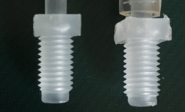
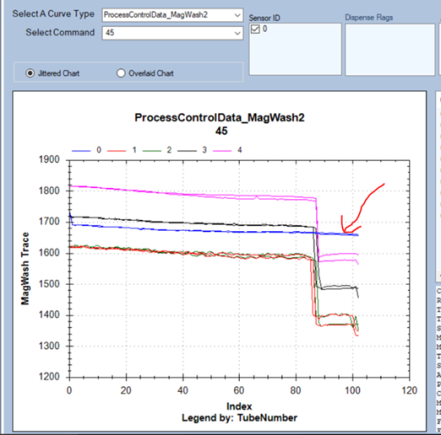

ML3 – Liquid Level Sense Too Low After Wash Dispense – Magnetic Wash Level 3
ML3 – Assay Processing Flag
Error Codes
| Magnetic Wash 1 | Magnetic Wash 2 | ||
|---|---|---|---|
| Dec | Hex | Dec | Hex |
| 048.000.00041 | 0x30.0x00x0.29 | 049.000.00041 | 0x31.0x00x0.029 |
Complaint Description
Magnetic Wash station failed a fluid level check, due to liquid level too low after wash buffer was dispensed.
Technical Support
Possible root causes
- Empty or disconnected Wash Bottle
- Kinks in wash fluid tubing
- Missing, disconnected, or cracked straw inside wash bottle
- Bad wash pump most likely if both MagWash showing ML3 error
- Faulty MagWash
Troubleshooting
- Check wash buffer bottle caps and connections are clean and intact.
- Straighten kinked tubing.
- Replace Empty Wash bottle.
- Tighten/Replace straw inside wash bottle.
- If the error repeats, dispatch FSE
 Field Service Engineer..
Field Service Engineer..
Field Service
Kinks in fluid tubing
- Open the Universal Fluids Drawer and look for any kinks in the fluid lines.
- Open the right-side access panel and look for any kinks in the fluid lines.
Resolution
Straighten any kinked tubing.
Missing, disconnected, or cracked aspirator tube (straw) inside bottle
- Verify that the aspirator tube is present in the bottle cap/fitting assembly and is not cracked.
- Replace the aspirator tube in the cap assembly or order a new cap assembly.
Resolution
- Empty wash bottle. Inventory control can sometimes be circumvented during various service procedures.
- Check to be sure there is fluid in the wash bottles.
- Replace the Universal Fluids Kit, if necessary.
Leaky or disconnected fluid fittings
Leaky or disconnected fluid fittings will cause low fluid levels in the Magnetic Wash Station.
- Look for the presence of air bubbles in the lines.
- Check to see that the bottle fittings are connected.
Resolution
- Look for the presence of any fluid leaks.
- Tighten, connect, or replace fittings as necessary.
Aspirators not sufficiently tightened
Aspirators not sufficiently tightened to make good electrical connection to the Magnetic Wash Station LLS PCB.
Resolution
- Use a 4.5 mm wrench to check for any loose aspirators.
- Carefully tighten any loose aspirators.
Faulty Solenoid Valve
Ensure that the solenoid wiring is securely attached to the PCB connector.
Resolution
Replace the solenoid.
Test
Verify that the solenoid valve is properly switching between bottle A and B.
Poorly aimed wash injectors
Poorly aimed wash injectors that dispense fluid outside the MTU.
- In Service Software, perform a Visual Dispense Verification.
- Look for the presence of fluid on the outside of the MTU tube.
Resolution
- Re-align the problematic injector, if possible.
- Otherwise, replace the Magnetic Wash Station.
Improperly routed Wash Injector nozzles
Injectors have been installed onto the wrong location and fill the wrong tube of the MTU.
- In Service Software, perform a Visual Dispense Verification.
- Look to see if fluid is injected into the correct tube.
Resolution
- Re-route the problematic injector, if possible.
- Otherwise, replace the Magnetic Wash Station.
Wash Pump dispense accuracy
A bad Wash Pump can cause an under-dispense in one or more tubes.
- In Service Software, perform a Visual Dispense Verification.
- Look at how even the fluid level is across all fiver tubes.
- Observe and note whether the ambient temperature has had large recent fluctuations or has been outside the 15–30 °C range.
Resolution
- Re-calibrate the Wash Pump.
- If necessary, replace the Wash Pump. If the Wash Pump serial number is -276 or lower, replace the pump regardless.
TSE Review
Acceptable range of mag wash volume is 0.8ml -1.2ml.
ML3 = when MW detects less than 0.8ml.
Based on the image, tube 0 looks okay for now.
Also, when MW pump is replaced the fitting should be replaced at the same time as a precaution.
Do not use wrench and do not over torque.
Once a fitting is damaged, it can damage a new pump.
The fitting on the right broke 2 MW pumps before the fitting was replaced.


 button at the top of the page to send feedback, comments, or change requests.
button at the top of the page to send feedback, comments, or change requests.